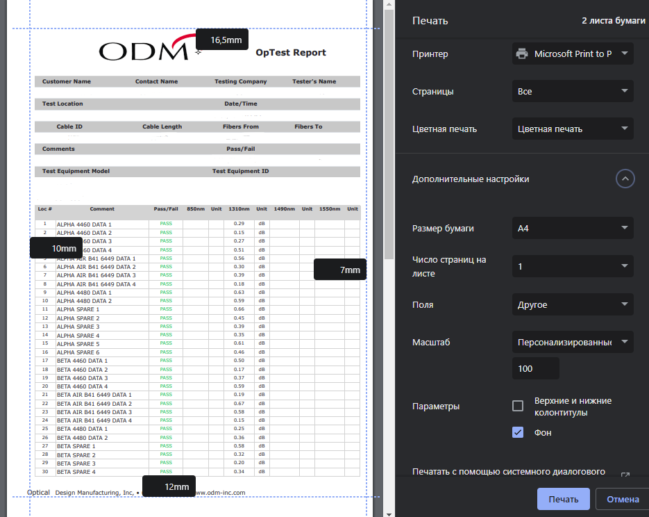

<button type="button" class="btn btn-warning" data-bs-toggle="modal" data-bs-target="#staticBackdrop">
  OPEN HELP
</button>

<div class="modal fade" id="staticBackdrop" data-bs-backdrop="static" data-bs-keyboard="false" tabindex="-1"
  aria-labelledby="staticBackdropLabel" aria-hidden="true">
  <div class="modal-dialog modal-xl">
    <div class="modal-content">
      <div class="modal-header">
        <h1 class="modal-title fs-5" id="staticBackdropLabel">HOW TO PRINT</h1>
        <button type="button" class="btn-close" data-bs-dismiss="modal" aria-label="Close"></button>
      </div>
      <div class="modal-body">
        1. Open this page in Google Chrome. <br>
        2. Press Edit.<br>
        3. Fill your data.<br>
        4. Press Ctrl+P for print preview.<br>
        5. Set margins: 16.5 TOP, 7 RIGHT, 12 BOTTOM, 10 LEFT.<br>
        6. Set your PDF printer in print menu.<br>
        7. Print / save document.<br>
        
      </div>
      <div class="modal-footer">
        <button type="button" class="btn btn-outline-secondary" data-bs-dismiss="modal">Close</button>
      </div>
    </div>
  </div>
</div>
